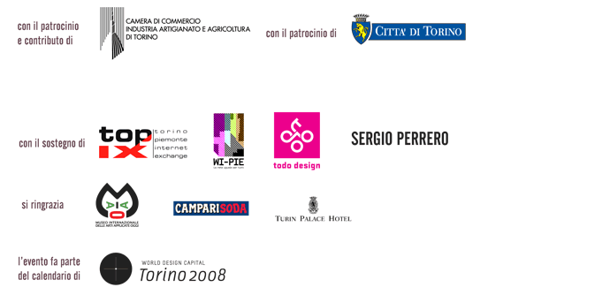

Computational Design: from Digital Fabrication to Mass-Customization
Conferences: September 15th and September 20th, 2008
Oratorio San Filippo Neri / MIAAO Museo Internazionale d’Arti Applicate Oggi
Via Maria Vittoria 5, Torino
Opening Reception: September 19th, 6.30pm
Exhibition: September 20th- 27th 2008
Ex-Chiesa Metodista,
Via Lagrange 13, Torino
C.STEM 2008 - BREEDING OBJECTS presents a selection of visionary projects anticipating future developments in design process and technologies.
What happens when domains such as design, creative coding and digital fabrication meet the new scenarios of mass-customization?
The exhibition presents works designed and produced through creative and innovative processes:
global news feeds woven into sweatshirts, chairs 3D printed out of frames from a computer-animated form, experimental custom ceramics and jewels shaped by online users, Google maps carved into wood, lamps shaped by the fight with a punchbag, 3D printing machines that print themselves.
The event celebrates new forms, technologies and design processes to urge companies and designers towards new insights.
C.STEM explores a scenario where the designer ability of writing custom software becomes the tool to connect the potential of digital fabrication to an ever growing demand of mass customized goods.
Applied computational strategies transform still objects into dynamic, adaptive and evolving processes. Mass produced all-of-a-kind objects are replaced by families of unique and one-time products: infinite variations, generated by an open project/process, enquires the role and creative thinking of post-industrial designers.
C.STEM 2008 - BREEDING OBJECTS is a two weeks event: an exhibition taking place in the suggestive Ex Methodist Church and two days of conferences to discover innovative works, projects and products from international artists and designers.
